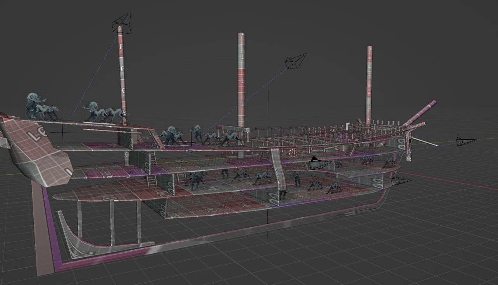
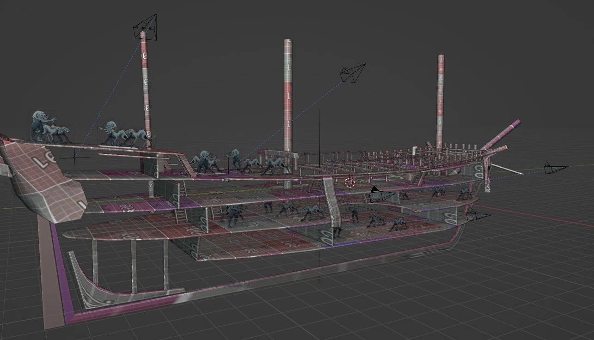
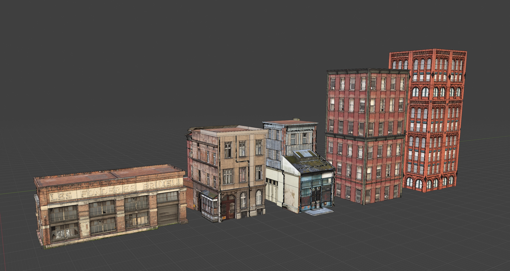
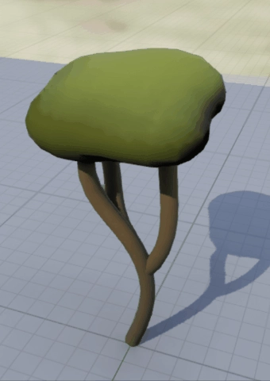
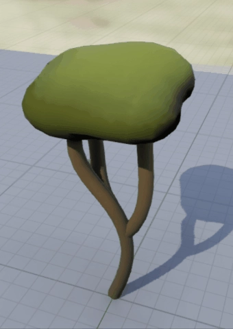

Prototypes Art
I've worked on a lot of artstyles for prototypes and really enjoy the process of quickly develop a style and methods to get assets made quickly, aswell as the opportunity to try out techniques that might not be practical on a larger production but can be helpful when trying to get stuff done as fast as possible.
Pirates
Turn based combat game based on the art of Boris Groh. I was tasked with developing the environment to go around painted 2d characters.
Initially I had wanted each fight scene to take place on different parts of a ship so that the camera could move smoothly from room to room and show the progression as you get closer to a boss etc. But due to technical limitations and scope concerns this idea was scrapped in favour of each room being a seperate scene. By this point I already had the skeleton of a ship blocked out so I split out parts of it to use as the basis for different scenes. Splitting up the scenes was definitly the right choice though as it would would have been quite challenging to fit everything in the enclosed spaces, under the deck for example. By not being constrained to fit everything into the realistic proportions of a ship meant I could exaggerate the size of things much further when needed which ultimately led to much nicer looking compositions.
Initial Blockout
 

Props used a very standard trim workflow, but the architecural bits of the ship were created as a single piece in the modelling software and imported as one mesh, once the camera was aligned to match the game I could quickly block out the walls and add any additional geometry much faster than if it had been constructed from modular pieces in engine, which allowed the backgrounds to have a more organic range of shapes, wood carvings etc.
I thought having realistic lighting might clash with the characters so I experimented with some different techniques for making the lighting look more painterly. The most promising approach was to use to a second uv channel with lightmap uvs to bake out the lighting into texture and then manually paint over it. However I just couldn't get this to look good. Perhaps because it was just a generic blend over top of the trim textures, the lighting never felt attached to the materials of the scene. I feel like this is probably why scenes of this size in other games would just be fully handpainted, but due to the time constraints of the project that wouldn't have been practical.
Overall I was pretty happy with how the final scenes turned out both through lighting and composition, however my lack of painting ability definitly held them back from looking as good as possible. Luckily there were other artists on the team who were able to help out with the more detailed textures, like the paintings and stained glass window but I still feel like the textures removed a lot of the appeal from the final prototype.
Collage City
Another prototype I worked on was for a 3d brawler set in a sprawling city with art inspired by collage and graffiti art.
I got these images from the art director on the project, my job was to construct the buildings that would fill out the majority of the city.
These were the first attempts, with just a basic building blockout and then a generic texture overtop, but it didn't really feel like the collage was wrapped around the surface of the building, it needed more depth.
My first idea was to build up layers of collage on top of each other and have darker layers in the shadows and lighter ones in the highlights, I did this by thresholding the original photo into bands of color and using that as mask for the different layers. While this effect looked nice I don't think it fit with the themes of the game, a regular city being taken over by the collage. So instead I tried a mask to reveal the building underneath, what really sold this effect was cutting out a collection of scrap pieces and bending them slightly to make them 3d then randomly scattering them across the mesh this just gave it some extra depth and made the transition between building and collage not look so flat.
This was the first point where I shared progress with the rest of the team and it was working but just didn't fit the tone of the project, so I switched out the textures for a more modern magazine and this seemed to be closer to what we were aiming for.
With the process locked in I started developing a full set of buildings based of some existing textures, I tried to keep each side reasonably unique for the smaller ones so that they could be rotated to get more variation.
Plants
I worked on a group project that was a tile based puzzle game about growing plants. I was responsible for the development of most of the plant growth effects in the game, I modelled and developed several shader effects to animate the growth of plants. Background plants used a simple threshold of the uvs to control the opacity and the displacement. For the main tiles I used a combination of pivot baking and regular scaling to achieve the effect. The plant meshes were modelled in blender. I couldn't find a plugin that baked pivot data I wanted so I made a quick modification to the blender pivot painter addon to add hierarchy indexes. A simple geo nodes setup was used to scatter the flowers and create a set of variations.


 
